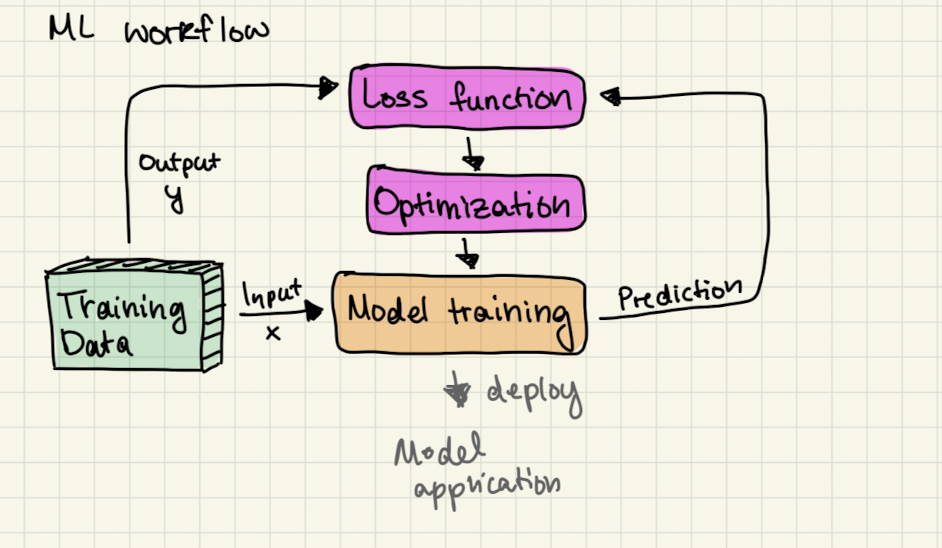
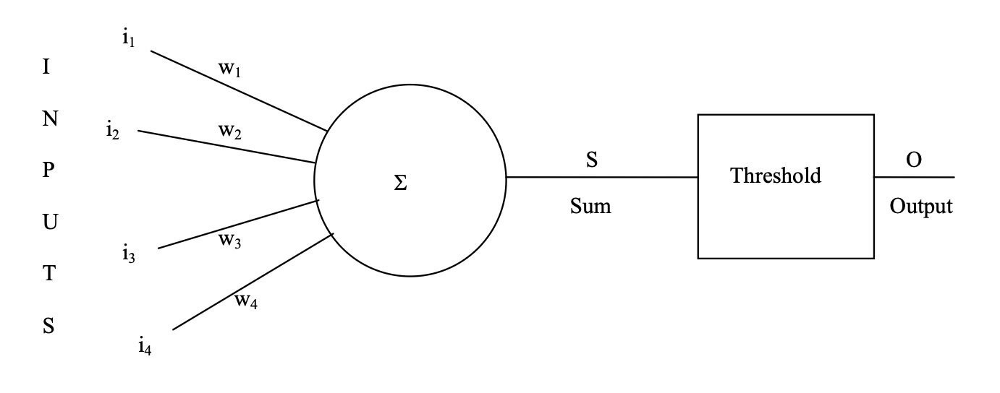
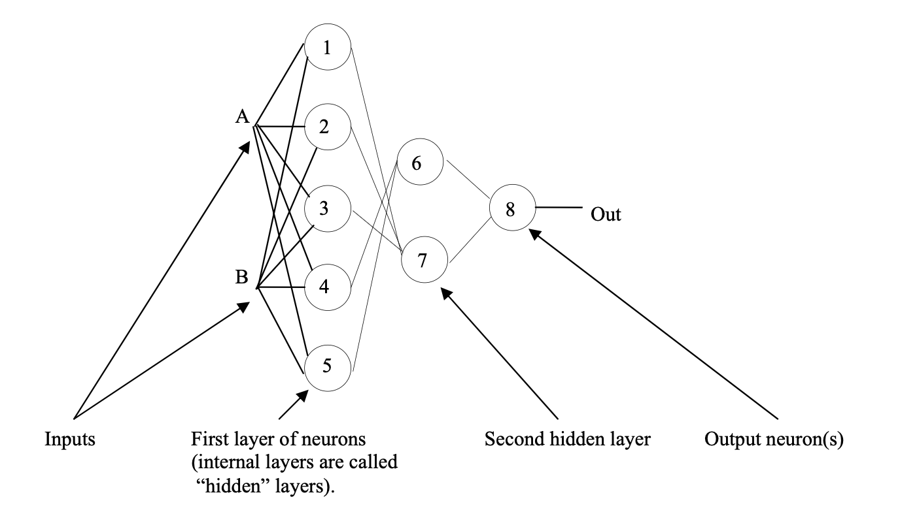

Machine learning
- Enabling computers and systems to learn from experience (data), often without explicit programming for every rule or scenario.
Definitions
- Instance - a single data point
- Feature - A measurable property/charasteric
- Feature vector - The set of all features for an instance
- Label (Target/Output) - pass/fail, yes/no etc.
- Training - model learns from parameters by adjusting weights
- Loss function - quantifies error of models preidctions
- Opdimization - updates parameters to minimize loss
- Generalization - a models ability to perform on new, unseen data
- Label encoding - convert categorical entries into numerical
- Feature Engineering - Selecting, editing, and/or transforming data to expose some useful structure for model processing
- Hyperparameters - set of user defined parameters ex. learning rate, step size, number of neural layers, batch size, etc.

Types of data
- Numerical $\rightarrow$ Continuous/Discrete
- Categorical $\rightarrow$ Nominal/Ordinal
- Time Series $\rightarrow$ time
- Image/Text/Audio
Model types
- Linear $\rightarrow$ weighted sum of features
- Non-Linear $\rightarrow$ Neural networks, random forests, etc.
Supervised learning
- Classification
- nearest neighbors, logistic regression, support vector machine (SVM), naive Bayes, linear discriminant analysis (LDA), quadratic discriminant analysis, tree-based models (decision tree, random forest, extremely randomized trees)
- Regression
- nearest-neighbors, linear regression, support vector machine regression, tree-based models (decision tree, random forest, extremely randomized trees), kernel ridge regression
Unsupervised learning
- Clustering
- k-means, Gaussian mixture model
- Dimensionality reduction
- principal component analysis (PCA), linear discriminant analysis (LDA), kernel principal component analysis
Neural Networks
- Perceptron: a simple neural network 
- After summing the weights, $S = i_1w_1+1_2w_2+1_3w_3+1_4w_4$, a threshold/activation function is applied to output a binary value. i.e. if $S>0.5$ or if $S<0.5$.
- The Sigmoid function is an example of an activation function. $$O = \frac{1}{1+e^{-S}}$$
What are NNs useful for
- Useful for pattern recognition.
- We can upgrade to multiple neurons for more sophisticated recognition 